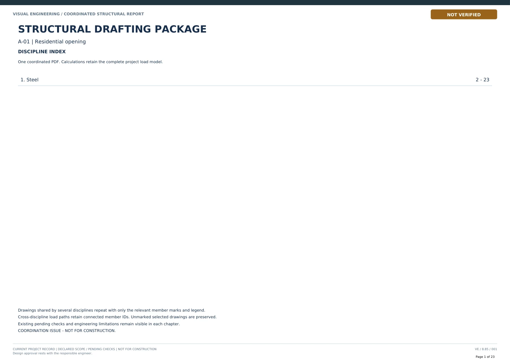

Residential opening
Read the coordinated structural report for beam B01 and posts P01 and P02, followed by the beam calculation dossier. This worked example records preliminary checks and open engineering decisions.
Loading the report…

Read the coordinated structural report for beam B01 and posts P01 and P02, followed by the beam calculation dossier. This worked example records preliminary checks and open engineering decisions.
Loading the report…
